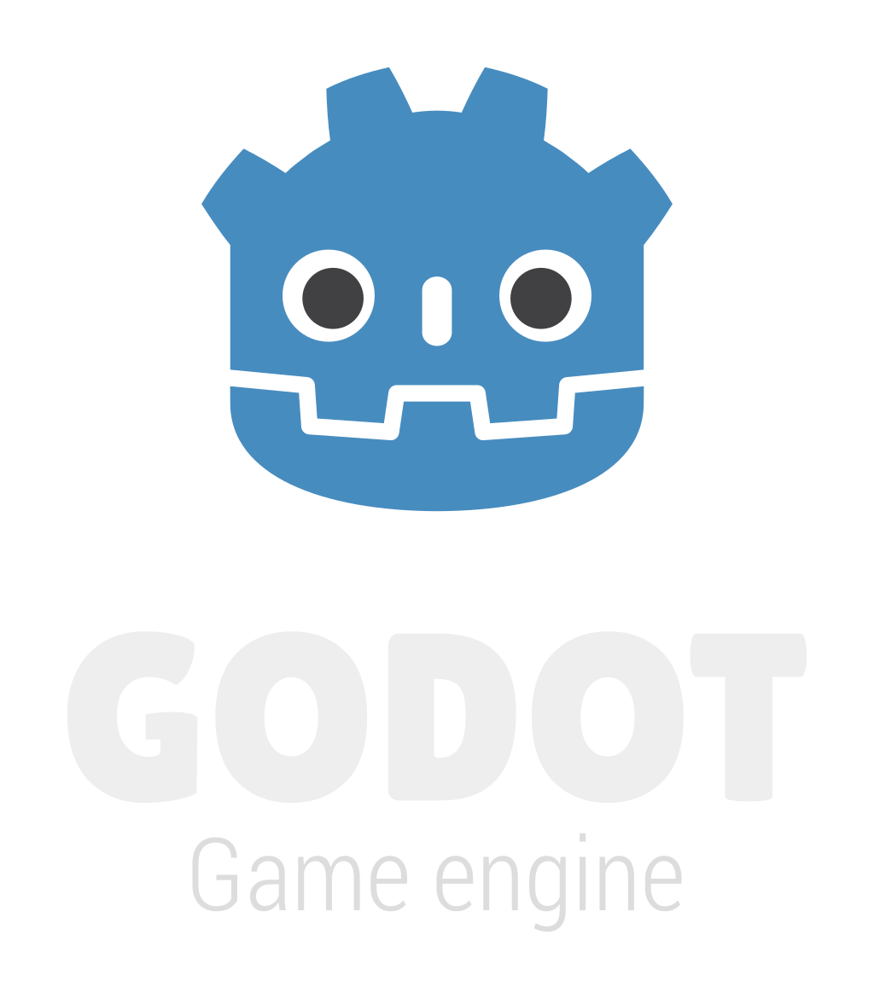

Sou um desenvolvedor de jogos que busca sucesso e reconhecimento
| Godot Game Engine |  |
| Pixel Studio | |
| Visual Studio Code |
Jogo desenvolvido na game engine Ccode, um app mobile.
Aqui seu objetivo é tocar em um macaco, que se chama Macaki, que te dar bananas que podem ser usadas para melhorar a coleta passiva de bananas
É basicamente só isso o jogo, pois meu objetivo com ele era desenvolver minhas habilidades no Ccode, pois mesmo que depois troquei para a Godot Game Engine, ele me ajudou a aprender fundamentos no desenvolvimento de jogos.
Jogo arcade de sobrevivência desenvolvido na engine Godot